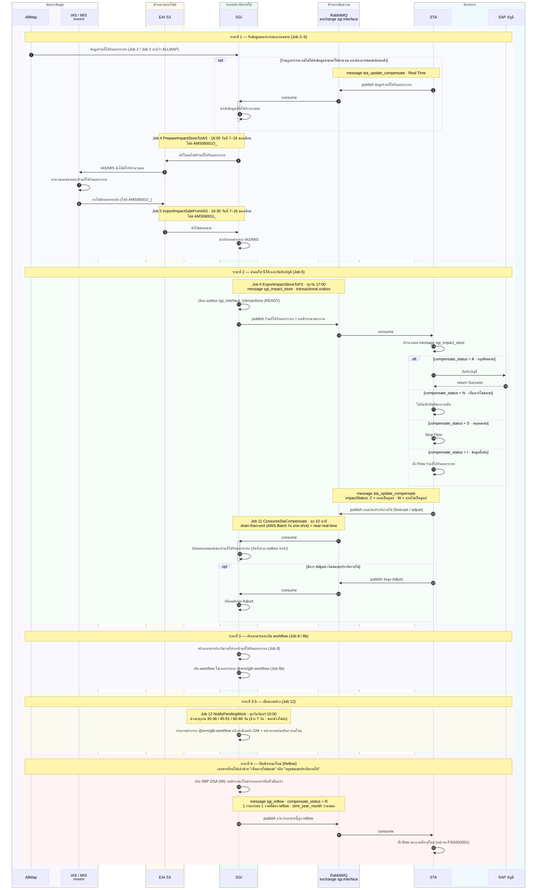

Flow ระบบใหม่ — Sequence Diagram
ลำดับการแลกข้อมูลระหว่าง ALLMAP · SGI · EAI S3 · IAS/MIS · RabbitMQ · STA · SAP
สิ่งที่เปลี่ยนจากระบบเดิม
มติ 2026-08-24 · 2026-09-01| ปลายทาง | ระบบเดิม | ระบบใหม่ |
|---|---|---|
| IAS / MIS (ยอดขาย) | วางไฟล์ผ่าน SFTP | แลกไฟล์ผ่าน EAI S3 — Job 4 อัปโหลด AMS06001O_ (16:00 วันที่ 7–16) · Job 5 ดึง AMS06001I_ (16:30) |
| STA (Statement) | ไฟล์ FRBC0001_ + SFTP |
RabbitMQ exchange sgi.interface (topic · durable) — publish/consume 3 ชุดข้อความ (ดูตารางถัดไป) |
| เปิดพิจารณาใหม่ | ไม่มีการแจ้ง STA | ต้อง publish sgi_reflow ให้ STA ตั้ง flow ของงวดนั้นใหม่ (มติ 2026-09-01) |
แผนภาพลำดับ (Sequence Diagram)
สร้างจาก new-flow-improved.mmd
ต้นฉบับเป็น Mermaid ที่ new-flow-improved.mmd — แก้ไฟล์นั้นแล้ว render ใหม่ ทั้ง
new-flow-improved.svg / new-flow-improved.png / new-flow.png จะตรงกันเสมอ ·
เอกสารประกอบ: Flow FGI/FCS + K2 · Flow K2 · Flow Batch Job
ชุดข้อความบน RabbitMQ
exchangesgi.interface
dataName | ทิศทาง | จังหวะการส่ง | ใช้ทำอะไร |
|---|---|---|---|
sgi_impact_store |
SGI → STA | ทุกวัน 17:00 (Job 6 · transactional outbox) | ร้านที่ได้รับผลกระทบ + ผลพิจารณาของงวด · compensate_status = I ตั้งต้น / A อนุมัติ / N ไม่ชดเชย / S หยุดชดเชย |
sta_update_compensate |
STA → SGI | Real Time | ยอดเงินประกันรายได้ (forecast / adjust) กลับเข้าเอกสาร · impactStatus = Z ยอดศูนย์ / W ยอดไม่เป็นศูนย์ |
sgi_reflow |
SGI → STA | เมื่อกดพิจารณาใหม่ | แจ้งว่าเอกสารที่จบไปแล้วถูก reflow · compensate_status = R · 1 รายการต่อ 1 งวด · stmt_year_month ว่างเสมอ |
สัญญาข้อความเต็มพร้อมตัวอย่าง JSON ทุกกรณีอยู่ที่ STA/ประกันรายได้-ตัวอย่าง-Message-RabbitMQ.md ·
ชื่อ exchange อ่านจาก backend config (SGI_MQ_EXCHANGE) ไม่ hardcode ·
ฟิลด์วันที่ของ message ยังเป็น พ.ศ. ตามสัญญาเดิมของ STA แปลงเฉพาะตอนประกอบ/อ่าน payload ห้ามให้ปนเข้า DB/API ของ SGI
กรณีเปิดพิจารณาใหม่ (Reflow)
ใหม่ 2026-09-01
เมื่อ ฝ่าย SBP DSA (section 06) กดพิจารณาใหม่จากเอกสารที่จบไปแล้วด้วยผล
“เห็นควรไม่ชดเชย” หรือ “หยุดชดเชยประกันรายได้” ระบบต้อง publish sgi_reflow ให้ STA
เพื่อให้ STA ตั้ง flow ของงวดที่เกี่ยวข้องใหม่ที่หน้าจอ FSG003001 —
ถ้าไม่แจ้ง STA จะปิดงวดนั้นค้างไว้ และยอดชดเชยรอบใหม่จะไม่ถูกคำนวณ
| รายการ | ข้อกำหนดที่ต้องทำตาม |
|---|---|
| ค่าที่บังคับ | compensate_status = "R" ทุกรายการ · stmt_year_month ว่างเสมอ (ยังไม่ทราบงวด statement ใหม่) |
| จำนวนรายการ | 1 รายการต่อ 1 งวด (compensate_year_month) — ส่งครบทุกงวดที่เอกสารเดิมครอบคลุม |
| โครงสร้างฟิลด์ | ชุดเดียวกับ sgi_impact_store ต่างที่ dataName และค่า compensate_status |
| Transaction boundary | insert outbox sgi_interface_transactions (OUT · READY) ใน transaction เดียวกับการเปิดรอบพิจารณาใหม่ แล้ว publish นอก transaction · ได้ publisher confirm จึง update เป็น SENT |
| Idempotency | message_id = sgi_interface_transactions.id · กดซ้ำบนเอกสารเดิมต้องไม่เกิดแถว outbox ที่สอง |